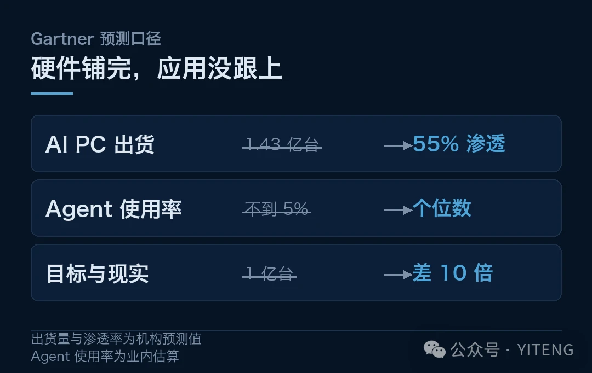
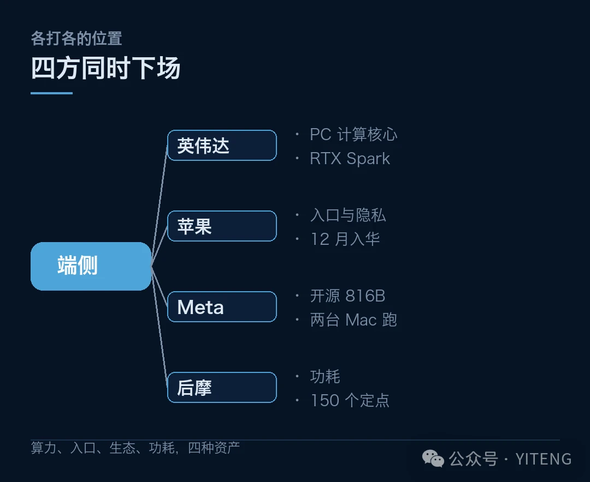
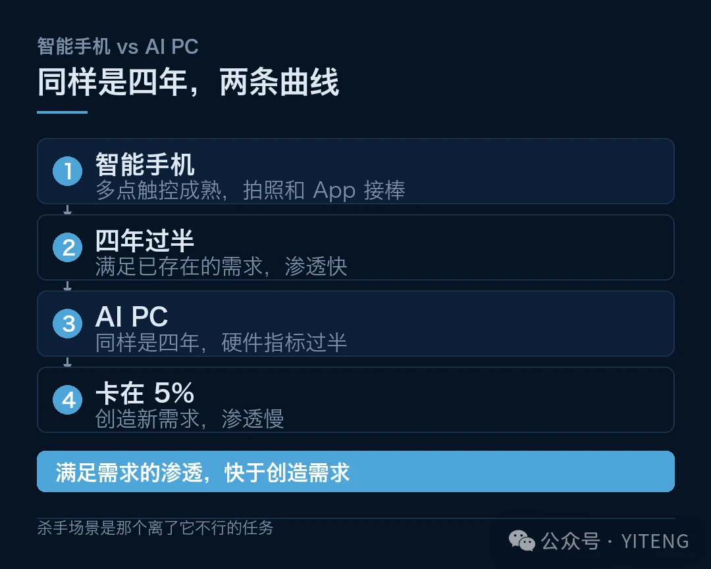
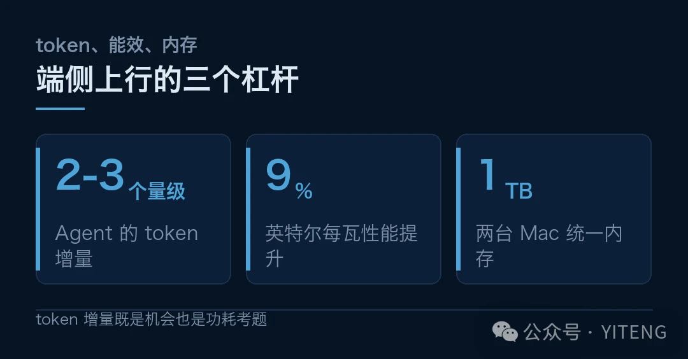

上周五晚上，北京双井的京东 Mall 挤满了人。
不是抢手机。是英伟达基于 RTX Spark 超级芯片（内部代号 N1X）的笔记本电脑，全球新品首发体验会。粉丝和 KOL 把展台围住，社群里一片沸腾。
黄仁勋今年 6 月发布这颗芯片时说过一句话，这是「PC 行业 40 年来首次彻底重新设计与再造」。
同一周，另外三件事也在发生。苹果董事长库克确认，国内的苹果 AI 功能本月开始测试、12 月发布。Meta 把 8160 亿参数的 Muse Spark Open 开源，联手苹果让它在两台 M5 Ultra Mac Studio 上跑起来。国产端侧算力公司后摩智能公布，M50 量产不到一年拿下 150 多个产品定点。
四方同时下场。端侧 AI 的战争，提前开打了。
但这里有个数字，值得先摆出来。
一边是硬件侧的全面开战，一边是应用侧的冷清。这道缝，就是本期主推要拆的东西。
01一、四年了，端侧 AI 一直在翻红
故事要从两年前讲起。
ChatGPT 引爆全球之后，英特尔第一个喊出了新概念，AI PC，个人 AI 电脑。随后 AI 手机、AI 平板、AI 智能体终端、具身智能、具身终端，概念一个接一个往外冒。
英特尔当时给出的目标是，AI PC 终端要到 1 亿台。
四年过去，这个数字眼看就要兑现。Gartner 等机构预测，2026 年全球 AI PC 出货量将达到 1.43 亿台以上，渗透率约 55%，第一次超过传统 PC 产品。
硬件侧赢了。可应用侧呢？
真实 Agent 渗透率和使用率，不到 5%。
一边是过半的渗透率，一边是个位数的使用率。问题出在哪？

硬件铺完，应用没跟上
02二、四家的牌，加一张国内的
将四方的动作逐一拆解，能看清它们各自的位置。
英伟达瞄的是 PC 的计算核心。RTX Spark 不是一块普通独显，它要抢的是 PC 的处理器位置。黄仁勋说「40 年来首次彻底重新设计」，指的是算力中枢从 CPU 主导转向 NPU 主导。
苹果押的是本地加隐私。库克确认国内 AI 功能 12 月发布，走的还是端侧优先路线。细节比表面更有意思，业内分析指出这一轮没有新 Siri，模型更新还要过审，另有分析提到折叠 iPhone 里装的是两个阿里的模型。苹果守住的是入口和隐私叙事，模型可以借外力。
Meta 抢的是开源加桌面可用。Muse Spark Open 用 MLX 框架优化，两台 M5 Ultra Mac Studio 凑出 1TB 统一内存就能完整运行 8160 亿参数模型。这是同级模型第一次上桌面。它补的正是苹果缺的那块。
后摩智能守的是功耗。创始人吴强讲得很直白，大模型从说话到做事，Agent 带来的 token 消耗有 2 到 3 个数量级的提升，这对计算效率提出了极高要求，M50 的核心优势就是功耗低。
国内还有一张容易被漏看的牌。后摩的 M50 量产不到一年，拿到 150 多个产品定点，服务客户超过百家，覆盖 Agent Computer、智能移动终端、具身智能机器人、边缘推理。
Agent Computer 这个词值得留意。它指的是专门为 Agent 长时程任务设计的终端形态，不是传统 PC 加个 NPU 那么简单。Agent 任务要连续跑几十上百次模型调用，对内存带宽、功耗墙、散热持续性的要求，跟跑一次摘要是两个量级。
吴强那句话要再读一遍。它过去被当成端侧的机会，其实首先是一道功耗考题。
150 个定点说明产业界已经在押注。但定点到量产、量产到真实使用率，中间还有两道坎。

四方同时下场
03三、那 5% 卡在哪
硬件铺完了，应用没跟上。这道坎不在算力，而在三个更实在的地方。
第一道坎，任务形态不匹配。 端侧 AI 过去两年主打的功能是摘要、润色、文生图，这些是「单次请求、单次响应」的轻任务。而 Agent 要的是连续几十上百次调用、要跨应用操作、要长时程记忆。手机那点内存和功耗预算，撑不起这种形态。
第二道坎，模型能力还在半路。 端侧模型受体积限制，复杂推理和工具调用能力明显弱于云端。用户试两次发现办不成事，第三次就不打开了。使用率上不去，不是不想用，试过之后放弃了。
第三道坎，也是最关键的，没有出现杀手级场景。AI PC 渗透率 55% 是个硬件指标，它只统计「这台机器有 NPU」，不管「这台机器在跑 AI」。当年智能手机普及，靠的是摄像头和 App 生态两个杀手场景。端侧 AI 现在缺这么一个东西。
缺的到底是什么？细分来看，可能是一个「离了它不行」的任务，而不是一堆「有了更好」的功能。摘要和润色都属于后者，随时可以不用。前者长什么样，现在还没人答得上。这也解释了为什么使用率卡在个位数。
这三道坎叠在一起，解释了那个反差。
如果找个历史对照，会更清楚。智能手机从多点触控成熟到渗透率过半，用了大约四年，靠的是摄像头和 App 生态两个杀手场景接棒。AI PC 从概念提出到现在也是四年，硬件指标已经过半，但杀手场景还没出现。
差别在于，智能手机的杀手场景是「本来就存在的需求被满足了」，拍照和装 App 都是。端侧 AI 现在提供的多是「被创造出来的需求」，摘要、润色、文生图，这些需求在没有 AI 的时候并不存在。
创造需求的渗透速度，从来都比满足需求慢得多。这可能是 5% 背后更结构性的原因。

同样是四年，两条曲线
04四、真正的变量在 Agent
但别急着下结论说端侧 AI 是泡沫。
后摩吴强那句话里藏着一个重要信号，Agent 带来的 token 消耗有 2 到 3 个数量级的提升。这句话要反过来读。
如果 Agent 任务真的把 token 消耗拉高两三个数量级，那么把这些请求全部送到云端，带宽和成本都吃不消。这时候端侧就不是「可选项」，而是「必选项」。
换句话说，端侧 AI 缺的不是场景，缺的是那个能把算力吃满的场景。而 Agent 恰好就是。
现在卡在中间的是模型能力。云端模型在快速变强，端侧受功耗和内存约束跟不上，这个差距短期内未必补得齐。
一个可能的解法是分工。简单、高频、隐私敏感的任务放端侧，复杂、低频、算力密集的放云端。Meta 那台 Mac Studio 跑 816B 参数是个信号，端侧的上限在被往上推。
这个分工能不能成立，取决于一件事：云端和端侧之间的切换成本。用户不该感觉到任务在哪跑，就像当年没人关心照片存在本地还是云端。

端侧上行的三个杠杆
做到这一点，需要系统层的统一调度，而不是每个应用自己决定。这正是英伟达、苹果、英特尔三家都在抢的位置，也是英伟达把 RTX Spark 定位成「PC 计算核心」而非「一块显卡」的原因。
05五、这场战争谁会赢
把时间轴拉长看，这场战争的胜负手不在芯片性能，在两个更底层的东西。
一个是生态位。英伟达的 CUDA 生态统治了云端训练，端侧如果还是它的地盘，等于一条护城河通吃两头。苹果 MLX 加 Meta 开源模型的组合，被认为正是在 CUDA 的墙上找缝。英特尔押注 2028 年的 Razor Lake-AX，每瓦性能提升 9%、功耗降 18%，也是在赌端侧的能效比。
另一个是入口。谁掌握入口，谁就掌握模型分发。苹果掌握手机和电脑入口，英伟达掌握算力，Meta 掌握开源生态。三家各有一段入口，谁也不完整。
这场战争的意义，不止于一次芯片升级。它背后，是 PC 产业四十年权力结构的一次松动。
上一次 PC 的计算核心发生转移，还是上世纪八十年代的事。那一次之后，诞生了微软和英特尔两个时代霸主。
那场转移的技术诱因，跟今天有几分相像。图形界面让 PC 从命令行走向大众，所需算力超出了 CPU 能经济承载的范围，才催出了独立的图形处理器。今天 Agent 把 token 消耗拉高两三个数量级，压的也是同一根杠杆。
区别在于，上一轮的赢家通吃了三十年。这一轮的护城河建在生态和入口上，而这两样东西，四家各拿一半。
所以这场战争大概率不会出现一个微软。更可能的结果是分层，英伟达拿算力，苹果拿入口，Meta 拿生态，国产厂商拿功耗和成本。
而对普通人来说，值得等的不是下一场发布会，是那个杀手场景。它出现之前，1.43 亿台 AI PC 里的大部分，还会继续安静地躺在一角。硬件已经就位，故事才刚开始。
本文数据来自 Gartner 等机构预测、各公司公开发布会及管理层公开表述，其中出货量与渗透率为机构预测值，模型参数与性能数据为厂商口径。不构成任何投资建议。
本文信息来源
小泰腾的科技日报 · 第 017 期 · 2026-10-20
本文信息来源
- 智能纪元 AGI — 英伟达、苹果同时下场，端边 AI 战争提前开打（2026-10-19） · 163.com
- 腾讯研究院 — AI 速递 20261019（2026-10-19） · sohu.com
- 中科曙光官网 — 曙光 8000 十大前沿应用成果发布（2026-10-18） · sugon.com
- 机器之心 — 算力、算法、数据之外：南芥智能押注智能增长的第四要素（2026-10） · mp.weixin.qq.com
- IT 爆破手 — 六分钱跑赢 GPT：南大孵化团队的模型群智能（2026-10） · mp.weixin.qq.com
- Fruition — The Frontier · 10-19-2026（2026-10-19） · fruition.net
本文首发于公众号「YITENG」。原文：mp.weixin.qq.com/s/pw0DLdjIXi80OFwLDMlqng
留言